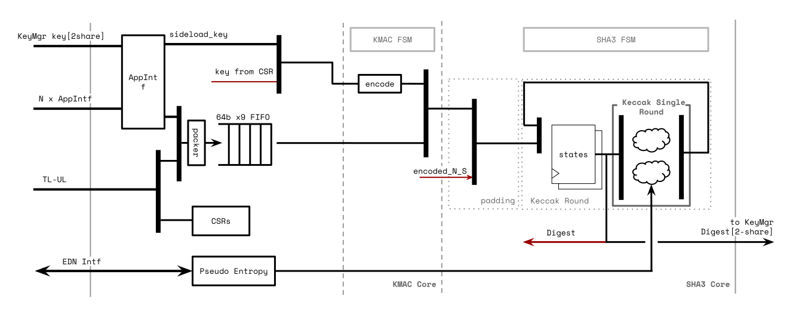

KMAC-SHA3
The module is based on the OpenTitan KMAC design.

OpenTitan KMAC core reference architecture shows the upstream core. The OCAH bus, key-delivery, and entropy connections are described in the integration details below.
1. OCAH Modifications
-
AXI4-lite key bus slave interface replaces side loading interface
-
AXI4-lite control/status bus slave interface
The KMAC host path uses the same conversion and isolation sequence as AES. The
address path subtracts the KMAC base address and masks to a 12-bit window
(4 KB) before the axi_to_axi_lite stage, aligning the internal decoder with
the OpenTitan register block. kmac_wrapper bridges the isolated AXI-Lite path
to TL-UL. EDN is handled identically to AES: KMAC is one of the four clients
arbitrated by u_axis_edn_crypto_s3c_scan (the shared
drbg_axis_edn_adapter), served from the same post-CSRNG DRBG AXI-Stream feed.
The app_i application interface is tied off since the SEP does not use the
KMAC hardware application path. Life-cycle escalation is inactive. KMAC
occupies alert indices [6:5] in OpenTitan Alert Termination and exports three
interrupts: done, fifo_empty, and err.
The Key Manager delivers a 256-bit KMAC key as eight words per share, in the
format given in Key Manager Key Delivery. Software shall set CFG_SHADOWED.sideload
to select the delivered key; while that bit is 0 the engine uses its software
key registers. Unlike AES and HMAC, software does not declare a key length for
a delivered key: the engine applies the delivered key’s length automatically
and ignores its key-length register for that operation. Beginning a keyed
operation that uses the delivered key while KEY_CTRL.KEY_VALID is 0 raises an
error instead of producing a digest; OTBN also reports an invalid key error.
Consult the OpenTitan KMAC documentation for the authoritative core functionality of the IP. The register map follows below.
2. Memory Map and Register Reference
2.1. Memory Map
Register offsets are relative to the block base in the subsystem memory map. The detailed map below defines each register and its fields.
2.2. Detailed Register Map
KMAC Accelerator
Accelerator for Keccak-based keyed hash message authentication code and SHA-3 hash functions; with SCA and FI countermeasures
Register Arrays:
- KEY_SHARE0[16]: 16 registers, base 0x30, stride 0x4
- KEY_SHARE1[16]: 16 registers, base 0x70, stride 0x4
- PREFIX[11]: 11 registers, base 0xB4, stride 0x4
Register List:
| Address | Name | Access | Description |
|---|---|---|---|
| 0x0 | INTR_STATE | RW | - |
| 0x4 | INTR_ENABLE | RW | - |
| 0x8 | INTR_TEST | W | - |
| 0xC | ALERT_TEST | W | - |
| 0x10 | CFG_REGWEN | R | - |
| 0x14 | CFG_SHADOWED | RW | - |
| 0x18 | CMD | W | - |
| 0x1C | STATUS | R | - |
| 0x20 | ENTROPY_PERIOD | RW | - |
| 0x24 | ENTROPY_REFRESH_HASH_CNT | R | - |
| 0x28 | ENTROPY_REFRESH_THRESHOLD_SHADOWED | RW | - |
| 0x2C | ENTROPY_SEED | W | - |
| 0x30 - 0x6C | KEY_SHARE0[16] | W | - |
| 0x70 - 0xAC | KEY_SHARE1[16] | W | - |
| 0xB0 | KEY_LEN | W | - |
| 0xB4 - 0xDC | PREFIX[11] | RW | - |
| 0xE0 | ERR_CODE | R | - |
Register Details:
INTR_STATE
| Bits | Field | Access | Reset | Description |
|---|---|---|---|---|
| 31:3 | Reserved | - | - | Reserved |
| 2 | kmac_err | RW1C | 0x0 | KMAC/SHA3 error occurred. ERR_CODE register shows the details |
| 1 | fifo_empty | R | 0x0 | The message FIFO is empty. This interrupt is raised only if the message FIFO is actually writable by software, i.e., if all of the following conditions are met: i) The KMAC block is not exercised by a hardware application interface. ii) The SHA3 block is in the Absorb state. iii) Software has not yet written the Process command to finish the absorption process. For the interrupt to be raised, the message FIFO must also have been full previously. Otherwise, the hardware empties the FIFO faster than software can fill it and there is no point in interrupting the software to inform it about the message FIFO being empty. |
| 0 | kmac_done | RW1C | 0x0 | KMAC/SHA3 absorbing has been completed |
INTR_ENABLE
| Bits | Field | Access | Reset | Description |
|---|---|---|---|---|
| 31:3 | Reserved | - | - | Reserved |
| 2 | kmac_err | RW | 0x0 | Enable interrupt when !!INTR_STATE.kmac_err is set. |
| 1 | fifo_empty | RW | 0x0 | Enable interrupt when !!INTR_STATE.fifo_empty is set. |
| 0 | kmac_done | RW | 0x0 | Enable interrupt when !!INTR_STATE.kmac_done is set. |
INTR_TEST
| Bits | Field | Access | Reset | Description |
|---|---|---|---|---|
| 31:3 | Reserved | - | - | Reserved |
| 2 | kmac_err | W | 0x0 | Write 1 to force !!INTR_STATE.kmac_err to 1. |
| 1 | fifo_empty | W | 0x0 | Write 1 to force !!INTR_STATE.fifo_empty to 1. |
| 0 | kmac_done | W | 0x0 | Write 1 to force !!INTR_STATE.kmac_done to 1. |
ALERT_TEST
| Bits | Field | Access | Reset | Description |
|---|---|---|---|---|
| 31:2 | Reserved | - | - | Reserved |
| 1 | fatal_fault_err | W | 0x0 | Write 1 to trigger one alert event of this kind. |
| 0 | recov_operation_err | W | 0x0 | Write 1 to trigger one alert event of this kind. |
CFG_REGWEN
| Bits | Field | Access | Reset | Description |
|---|---|---|---|---|
| 31:1 | Reserved | - | - | Reserved |
| 0 | en | R | 0x1 | Configuration enable. |
CFG_SHADOWED
| Bits | Field | Access | Reset | Description |
|---|---|---|---|---|
| 31:27 | Reserved | - | - | Reserved |
| 26 | en_unsupported_modestrength | RW | 0x0 | Enable Unsupported Mode and Strength configs. SW may set this field for KMAC to move forward with unsupported Keccak Mode and Strength configurations, such as cSHAKE512. If not set, KMAC won't propagate the SW command (CmdStart) to the rest of the blocks (AppIntf, KMAC Core, SHA3). |
| 25 | Reserved | - | - | Reserved |
| 24 | entropy_ready | RW | 0x0 | Entropy Ready status. Software sets this field to allow the entropy generator in KMAC to fetch the entropy and run. |
| 23:21 | Reserved | - | - | Reserved |
| 20 | msg_mask | RW | 0x0 | Message Masking with PRNG. If 1, KMAC applies PRNG to the input messages to the Keccak module when KMAC mode is on. |
| 19 | entropy_fast_process | RW | 0x0 | Entropy Fast process mode. If 1, entropy logic uses garbage data while not processing the KMAC key block. It will re-use previous entropy value and will not expand the entropy when it is consumed. Only it refreshes the entropy while processing the secret key block. This process should not be used if SCA resistance is required because it may cause side channel leakage. |
| 18 | Reserved | - | - | Reserved |
| 17:16 | entropy_mode | RW | 0x0 | Entropy Mode Using this field, software can configure mode of operation of the internal pseudo-random number generator (PRNG). Note that once software has configured a value different from `idle_mode` after reset, and set the !!CFG_SHADOWED.entropy_ready bit afterwards, the PRNG configuration cannot be changed anymore (unless an EDN request timeout occurs when running in EDN mode). Further writes to this field will change the value received upon reading the register, but they will be ignored by the internal hardware. |
| 15:13 | Reserved | - | - | Reserved |
| 12 | sideload | RW | 0x1 | Sideloaded Key. Deprecated: defaults to 1 (sideload). Set to 0 for DV testing with SW key path only. If 1, KMAC uses KeyMgr sideloaded key for SW initiated KMAC operation. KMAC uses the sideloaded key regardless of this configuration when KeyMgr initiates the KMAC operation for Key Derivation Function (KDF). |
| 11:10 | Reserved | - | - | Reserved |
| 9 | state_endianness | RW | 0x0 | State Endianness. If 1 then each individual word in the !!STATE output register is converted to big-endian byte order. The order of the words in relation to one another is not changed. This setting does not affect how the state is interpreted during computation. |
| 8 | msg_endianness | RW | 0x0 | Message Endianness. If 1 then each individual multi-byte value, regardless of its alignment, written to !!MSG_FIFO will be added to the message in big-endian byte order. If 0, each value will be added to the message in little-endian byte order. A message written to !!MSG_FIFO one byte at a time will not be affected by this setting. From a hardware perspective byte swaps are performed on a TL-UL word granularity. |
| 7:6 | Reserved | - | - | Reserved |
| 5:4 | mode | RW | 0x0 | Keccak hashing mode. This module supports SHA3 main hashing algorithm and the part of its derived functions, SHAKE and cSHAKE with limitations. This field is to select the mode. |
| 3:1 | kstrength | RW | 0x0 | Hashing Strength 3 bit field to select the security strength of SHA3 hashing engine. If mode field is set to SHAKE or cSHAKE, only 128 and 256 strength can be selected. Other value will result error when hashing starts. |
| 0 | kmac_en | RW | 0x0 | KMAC datapath enable. If this bit is 1, the KMAC mode is active and the secret key is prepended to the incoming message. |
CMD
| Bits | Field | Access | Reset | Description |
|---|---|---|---|---|
| 31:11 | Reserved | - | - | Reserved |
| 10 | err_processed | W1C | - | When error occurs and one of the state machine stays at Error handling state, SW may process the error based on ERR_CODE, then let FSM back to the reset state |
| 9 | hash_cnt_clr | W1C | - | Software can set this bit to 1 to manually clear !!ENTROPY_REFRESH_HASH_CNT. |
| 8 | entropy_req | W1C | - | Software can set this bit to 1 to manually trigger the reseeding of the internal PRNG when running in EDN mode. This will also clear !!ENTROPY_REFRESH_HASH_CNT. Note that the hardware may miss the trigger pulse if the module is not idle, or if the module is currently performing a reseed operation. |
| 7:6 | Reserved | - | - | Reserved |
| 5:0 | cmd | W1C | - | Issue a command to the KMAC/SHA3 IP. The command is sparse encoded. To prevent sw from writing multiple commands at once, the field is defined as enum. |
STATUS
| Bits | Field | Access | Reset | Description |
|---|---|---|---|---|
| 31:18 | Reserved | - | - | Reserved |
| 17 | ALERT_RECOV_CTRL_UPDATE_ERR | R | 0x0 | An update error has not occurred (0) or has occurred (1) in the shadowed Control Register. KMAC operation needs to be restarted by re-writing the Control Register. |
| 16 | ALERT_FATAL_FAULT | R | 0x0 | No fatal fault has occurred inside the KMAC unit (0). A fatal fault has occurred and the KMAC unit needs to be reset (1), Examples for such faults include i) TL-UL bus integrity fault ii) storage errors in the shadow registers iii) errors in the message, round, or key counter iv) any internal FSM entering an invalid state v) an error in the redundant lfsr |
| 15 | fifo_full | R | - | Message FIFO Full indicator |
| 14 | fifo_empty | R | 0x1 | Message FIFO Empty indicator. The FIFO's `Pass` parameter is set to `1'b 1`. So, by default, if the SHA engine is ready, the write data to FIFO just passes through. In this case, `fifo_depth` remains **0**. `fifo_empty`, however, lowers the value to **0** for a cycle, then goes back to the empty state, **1**. See the "Message FIFO" section in the spec for the reason. |
| 13 | Reserved | - | - | Reserved |
| 12:8 | fifo_depth | R | - | Count of occupied entries in the message FIFO. |
| 7:3 | Reserved | - | - | Reserved |
| 2 | sha3_squeeze | R | - | If 1, SHA3 completes sponge absorbing stage. In this stage, SW can manually run the hashing engine. |
| 1 | sha3_absorb | R | - | If 1, SHA3 is receiving message stream and processing it |
| 0 | sha3_idle | R | 0x1 | If 1, SHA3 hashing engine is in idle state. |
ENTROPY_PERIOD
| Bits | Field | Access | Reset | Description |
|---|---|---|---|---|
| 31:16 | wait_timer | RW | 0x0 | EDN request wait timer. The entropy module in KMAC waits up to this field in the timer pulse after it sends request to EDN module. If the timer expires, the entropy module moves to an error state and notifies to the system. If there is a pending EDN request during wait timer update, then this update is delayed until the EDN request is complete. If 0, the entropy module waits the EDN response always. If EDN does not respond in this configuration, the software shall reset the IP. |
| 15:10 | Reserved | - | - | Reserved |
| 9:0 | prescaler | RW | 0x0 | EDN Wait timer prescaler. EDN Wait timer has 16 bit value. The timer value is increased when the timer pulse is generated. Timer pulse is raises when the number of the clock cycles hit this prescaler value. The exact period of the timer pulse is unknown as the KMAC input clock may contain jitters. |
ENTROPY_REFRESH_HASH_CNT
| Bits | Field | Access | Reset | Description |
|---|---|---|---|---|
| 31:10 | Reserved | - | - | Reserved |
| 9:0 | hash_cnt | R | 0x0 | Hash (KMAC) counter |
ENTROPY_REFRESH_THRESHOLD_SHADOWED
| Bits | Field | Access | Reset | Description |
|---|---|---|---|---|
| 31:10 | Reserved | - | - | Reserved |
| 9:0 | threshold | RW | 0x0 | Hash Threshold |
ENTROPY_SEED
| Bits | Field | Access | Reset | Description |
|---|---|---|---|---|
| 31:0 | seed | W | - | 32-bit chunk of the entropy generator seed |
KEY_SHARE0[16]
| Bits | Field | Access | Reset | Description |
|---|---|---|---|---|
| 31:0 | key_0 | W | - | 32-bit chunk of up-to 512-bit Secret Key |
KEY_SHARE1[16]
| Bits | Field | Access | Reset | Description |
|---|---|---|---|---|
| 31:0 | key_0 | W | - | 32-bit chunk of up-to 512-bit Secret Key |
KEY_LEN
| Bits | Field | Access | Reset | Description |
|---|---|---|---|---|
| 31:3 | Reserved | - | - | Reserved |
| 2:0 | len | W | 0x0 | Key length choice |
PREFIX[11]
| Bits | Field | Access | Reset | Description |
|---|---|---|---|---|
| 31:0 | prefix_0 | RW | 0x0 | 32-bit chunk of Encoded NS Prefix |
ERR_CODE
| Bits | Field | Access | Reset | Description |
|---|---|---|---|---|
| 31:0 | err_code | R | 0x0 | If the `kmac_err` interrupt occurs, this register has information on the error cause. Bits 31:24 contain the error code (please refer to `err_code_e` in `hw/ip/kmac/rtl/kmac_pkg.sv`) for the encoding, and bits 23:0 contain additional debug information. This register does *not* get cleared when the `kmac_err` interrupt state gets cleared. |